In the previous applications we have looked at how we can hijack method implementations during runtime using Cycript, and even change the logic of the code rather than changing the complete implementation using GDB. All of these things have been done to serve a purpose, which is to make the application do what we want. However, using Cycript or GDB is a bit of a pain as one has to do repeat the same process everytime after you restart the application. This is where patching the application is useful. Once a change has been made in the application’s binary, its permanent. So you don’t have to repeat the same process over and over again. Once the binary is patched, you can then run it on a jailbroken device with the changed logic.
In this article, we will be using the same application GDB-Demo that we had used in Part 22 of this series. If you remember, we had found a way to change the logic of the method that gets called when Login was tapped and hence bypassed the login authentication check. In this article, we are going to permanently patch this check so we are always authenticated.
The first thing you need to do is install the demo version of IDA Pro from their website. IDA Pro is a pretty awesome multi-processor disassembler and debugger. Once it is downloaded, open it up and choose the option Go which just opens up IDA without any preselected binary. Please note that when you run an application on the simulator using Xcode, the code is compiled for the i386 architecture, whereas when you run the application on a device using Xcode, it is compiled for the ARM architecture. The demo version of IDA Pro supports both these architectures, however in this tutorial we are going to compile the application on i386 architecture (i.e on a simulator) to save the effort of copying the application binary from the device to our computer.
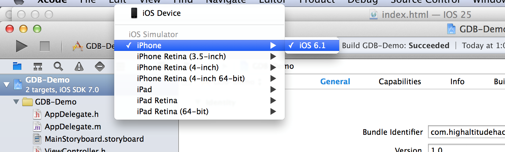
Now open Xcode and run the GDB-Demo application that you had just downloaded using simulator. ake sure the application builds successfully and that it installs propery on the simulator. This will generate an application directory inside the folder /Users/$username/Library/Application Support/iPhone Simulator/$ios version of simulator/Applications/. In my case, the location is /Users/Prateek/Library/Application Support/iPhone Simulator 6.1/Applications/. Once you are in this directory, you have to find your application folder. Using the command ls -al will give you the last modified date of these folders. The latest one would be our application.
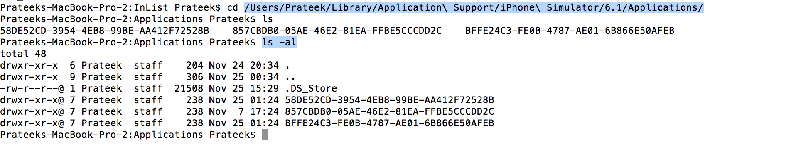
Use the command open DirectoryName and this will open the directory in Finder.
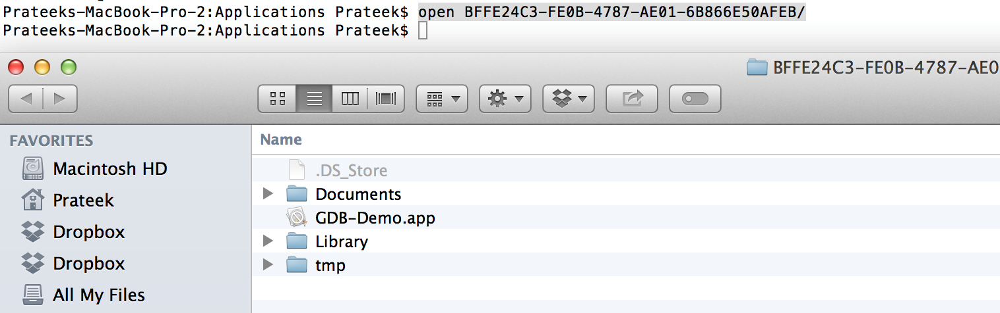
Go inside the folder GDB-Demo.app (this is the application bundle) by right clicking on it and choosing the option Show Package contents. Inside this folder, you will find the application binary with the name GDB-Demo. This is the binary that we will provide to IDA Pro.
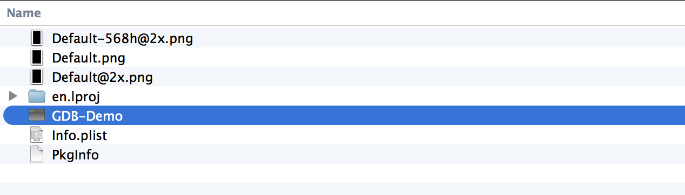
Now drag and drop the application binary on the IDA pro icon. Click on Ok and proceed.
You will see the disassembled code like this.
Coming back to the application, we know that the application has a login page like the one shown below. We had already modified the logic of this application using GDB in Part 22. We also know that the method whose logic was changed was -(IBAction)loginButtonTapped:(id)sender
In IDA Pro, you can see a functions window on the left. Choose any function from the list of functions and press Ctrl+F. Now search for the function loginButtonTapped. Once you have found it, double click on it. You will be shown the dissassembly for this function on the right side.
To view this in sort of a graphical format, double click on the function name in the functions window and press Space. The view will change to something like this. This is a better way of examining the disassembly as it also helps us in understanding the flow of the function. If you want to switch to the previous view, you can press Space again.
Scroll down in the function disassembly on the right side. You can see that the flow of the function can lead to different blocks of code depending on specific conditions. It is obvious that somewhere within this function there is a check for whether the username and password are correct or not and authenticate or disallow the user. After scrolling down for a bit, we arrive at this block. This looks very interesting. On the right side, i can see UIAlertView in the code section whereas the left section shows a string named adminPage.
I would really like the flow to go to the left hand side, where it says adminPage. The instruction that decides which block of code the execution will jump to is just one instruction before.
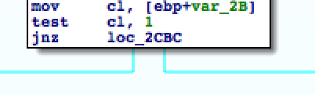
It says jnz loc_2CBC, where loc_2CBC is a label and jnz stands for Jump if not zeroinstruction. We can see that the code block on the left contains this label.
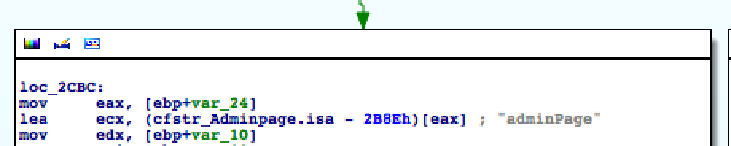
This means execution will jump to left if the zero flag is not set. If i can modify the instruction jnz to jz, then my purpose would be solved as the logic would be reversed and i will be authenticated. So what do i need to convert this from jnz to jz.
MORE MONEY !
Well, that was a bit of humour. A licensed version of IDA Pro will get the job done for you and you can simply modify this instruction. However, we are going to do this the free way, even though it requires a bit of extra effort and calculation but its worth it and we will also learn a few new things on the way. In the next article, we will also discuss an alternative named Hopper that is not as expensive as IDA but very good in terms of functionality. For that first we need to find the address of the jnz instruction. To do that, double click on this instruction so that it gets yellow…
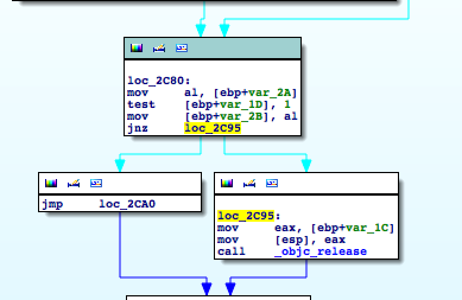
Now press Space..
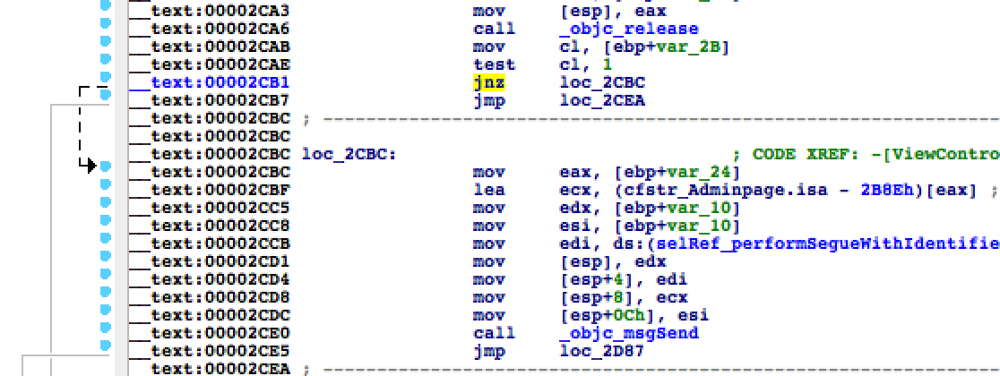
As we can clearly see, the address of this instruction is 00002CB1. However, we cannot just go ahead and change the address at this instruction, This is because this address is the absolute address of this instruction and it will be different every time the application is launched. What we need to find out is the offset of this instruction relative to the Mach-O binary. This instruction has to be modified in the code section of the assembly. Hence the offset of this instruction relative to the binary can be calculated as ..
(Offset of code section relative to binary) + (Absolute address of the instruction to be changed – Starting address of the code section)
Right now we just know the Absolute address of the instruction to be changed. We can find the other two things using otool. Browse to the application directory /Users/Prateek/Library/Application Support/iPhone Simulator/6.1/Applications/1804F89F-AD44-4782-BB29-47F5C521D10D/GDB-Demo.app and use the following command as shown in the image below.
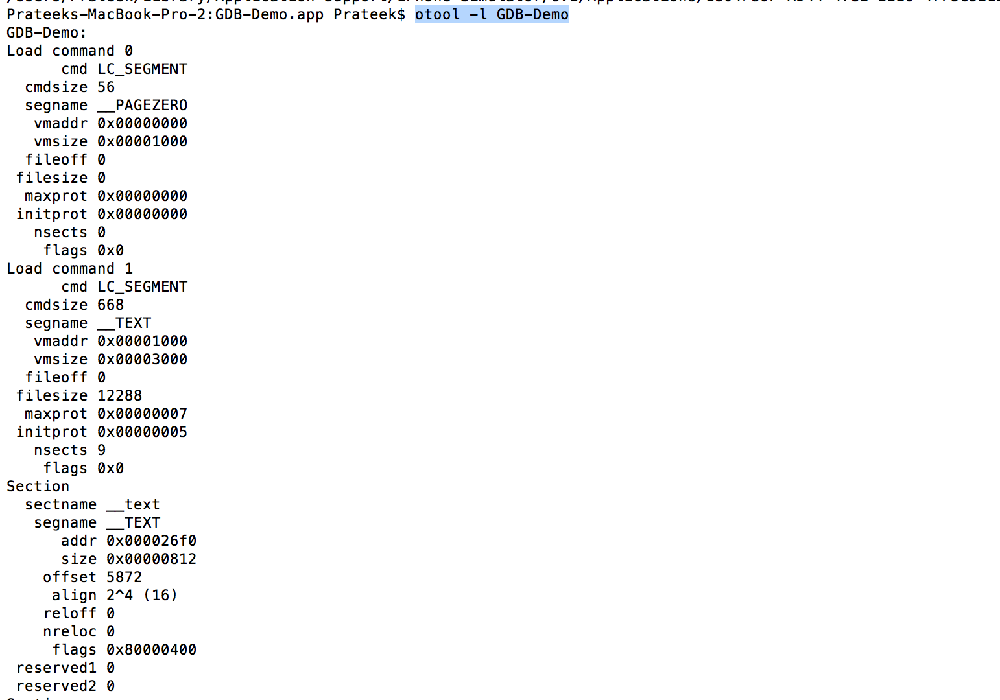
Look for the text section.
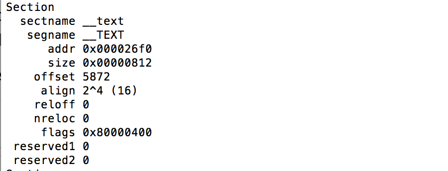
As you can see, the starting address is 0x000026f0(Hex) and the offset is 5872(Decimal). Please note that these things may be different in your case.
Hence, using these values and the above equation we can find the offset as ..
5872(Decimal) + (0x00002CB1(Hex)- 0x000026f0(Hex)) = 0x1cb1
Now, as we discussed earlier, we need to replace the jnz instruction with a jz instruction. You can see from this link that the opcode for the JNZ instruction is OF 85 whereas the opcode for the JZ instruction is OF 84.
Now download the application Hex Fiend and open it up. Drag and drop the application binary to it.
Now click on Edit –> Jump to Offset and type the offset as 0x1cb1. This will take you to the line with the jnz instruction.
Now look for the opcode OF 85. Change it to 0F 84 as shown below.
Now save your changes and exit Hexfiend. As you remember, we had installed the app previously in the simulator. So fire up the IOS simulator, quit the GDB-Demo app if it is running and open it again. Now just tap on Login without entering anything in the username and password. It will direct you to the admin page.
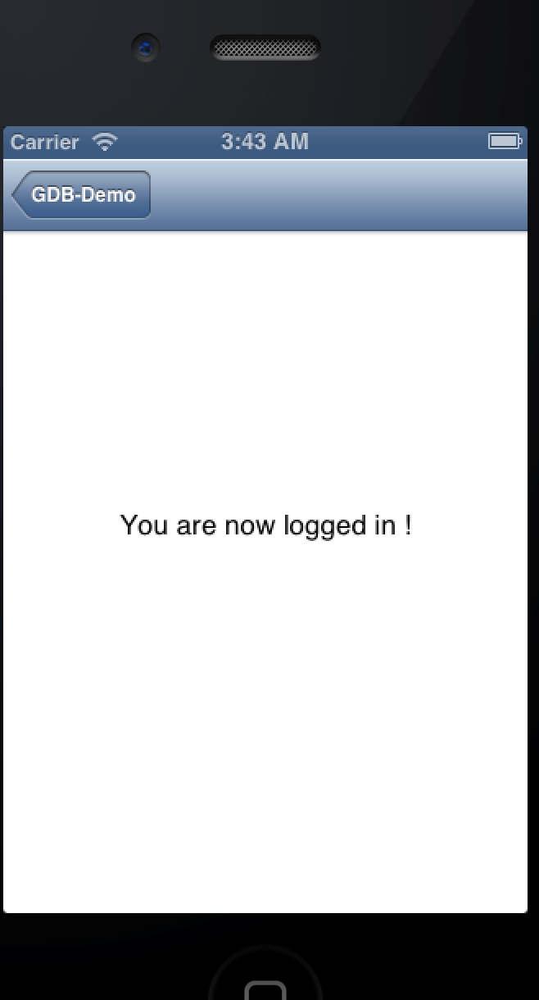
Perfect, we just patched a binary using old school techniques. In the next article, we will look at a tool named Hopper and learn how to patch IOS applications using it.